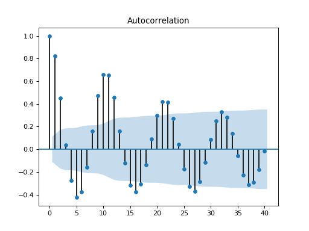

statsmodels.graphics.tsaplots.plot_acf¶
-
statsmodels.graphics.tsaplots.plot_acf(x, ax=None, lags=None, alpha=0.05, use_vlines=True, unbiased=False, fft=False, title='Autocorrelation', zero=True, vlines_kwargs=None, **kwargs)[source]¶ Plot the autocorrelation function
Plots lags on the horizontal and the correlations on vertical axis.
- Parameters
- xarray_like
Array of time-series values
- axMatplotlib AxesSubplot instance, optional
If given, this subplot is used to plot in instead of a new figure being created.
- lagsint or array_like, optional
int or Array of lag values, used on horizontal axis. Uses np.arange(lags) when lags is an int. If not provided,
lags=np.arange(len(corr))is used.- alphascalar, optional
If a number is given, the confidence intervals for the given level are returned. For instance if alpha=.05, 95 % confidence intervals are returned where the standard deviation is computed according to Bartlett’s formula. If None, no confidence intervals are plotted.
- use_vlinesbool, optional
If True, vertical lines and markers are plotted. If False, only markers are plotted. The default marker is ‘o’; it can be overridden with a
markerkwarg.- unbiasedbool
If True, then denominators for autocovariance are n-k, otherwise n
- fftbool, optional
If True, computes the ACF via FFT.
- titlestr, optional
Title to place on plot. Default is ‘Autocorrelation’
- zerobool, optional
Flag indicating whether to include the 0-lag autocorrelation. Default is True.
- vlines_kwargsdict, optional
Optional dictionary of keyword arguments that are passed to vlines.
- **kwargskwargs, optional
Optional keyword arguments that are directly passed on to the Matplotlib
plotandaxhlinefunctions.
- Returns
- figMatplotlib figure instance
If ax is None, the created figure. Otherwise the figure to which ax is connected.
See also
matplotlib.pyplot.xcorr,matplotlib.pyplot.acorrNotes
Adapted from matplotlib’s xcorr.
Data are plotted as
plot(lags, corr, **kwargs)kwargs is used to pass matplotlib optional arguments to both the line tracing the autocorrelations and for the horizontal line at 0. These options must be valid for a Line2D object.
vlines_kwargs is used to pass additional optional arguments to the vertical lines connecting each autocorrelation to the axis. These options must be valid for a LineCollection object.
Examples
>>> import pandas as pd >>> import matplotlib.pyplot as plt >>> import statsmodels.api as sm
>>> dta = sm.datasets.sunspots.load_pandas().data >>> dta.index = pd.Index(sm.tsa.datetools.dates_from_range('1700', '2008')) >>> del dta["YEAR"] >>> sm.graphics.tsa.plot_acf(dta.values.squeeze(), lags=40) >>> plt.show()
(Source code, png, hires.png, pdf)

{kind=link}
{kind=link}